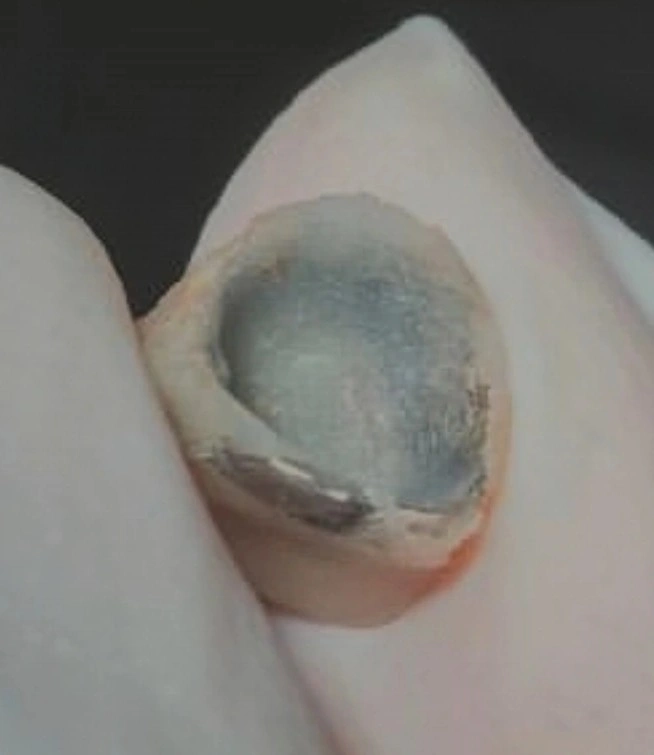

نسخه استخراجشده؛ ترجمه یا تأیید علمی انجام نشده است. وضعیت: captured
بیمار با یک روکش قدیمی آمده است و به هر دلیلی ناچاری تراش دندان زیر آن را اصلاح کنی. روکش قبلی سالم از دندان جدا شده است. تا آماده شدن روکش جدید، بیمار روکش موقت لازم دارد. باید موقت را از صفر بسازی؟

بعد از اصلاح تراش، روکش قبلی دیگر روی دندان گیر ندارد. راه معمول این است که روکش موقت از صفر ساخته شود؛ ولی راه سادهتری هم هست: همان روکش قبلی را با رزین ریلاین کن و بهعنوان روکش موقت تحویل بده.
ریلاین، سطح داخلی روکش را با فرم جدید تراش هماهنگ میکند تا روکش دوباره روی دندان بنشیند.
مزیت این راه: بیمار با روکشی میرود که فرم و اکلوژنش برایش آشناست، و ساخت روکش موقت هم عملاً به چند دقیقه ریلاین خلاصه میشود.
بازاستفاده از روکش قبلی یک شرط دارد: روکش باید سالم از دندان جدا شود؛ یعنی خودش افتاده باشد، یا بهراحتی و بدون بریدن از روی دندان خارج شود. روکشی که برای درآوردن بریده شود، این امکان را از دست میدهد.
پس دو مسیر پیش رو داری: روکشی که خودش افتاده یا با نیروی کنترلشده بهراحتی جدا شده، سالم مانده و میتواند با ریلاین روکش موقت شود؛ روکشی که بهراحتی جدا نمیشود، بریده و خارج میشود و دیگر برای این کار قابل استفاده نیست.
کنترل نیرو شرط لازم هر برداشتن روکش است، بهویژه وقتی قرار است روکش سالم بماند. بریدن روکش، ساختار دندان را حفظ میکند.